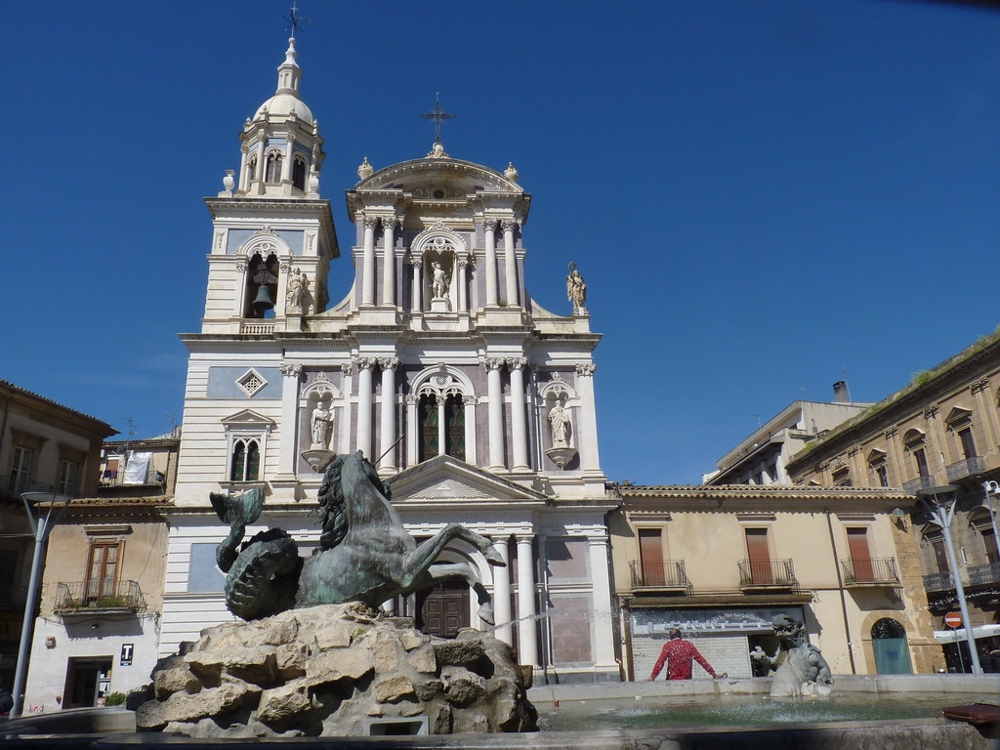

CALTANISSETTA:
PIAZZA GARIBALDI
Piazza Garibaldi costituisce il centro della vita urbana a Caltanissetta, con spazi aperti e edifici storici che ne definiscono il carattere. La piazza svolge un ruolo di punto d’incontro per i cittadini e ospita eventi pubblici e manifestazioni culturali. La sua posizione centrale e la funzione sociale la rendono un elemento fondamentale per comprendere l’identità della città.